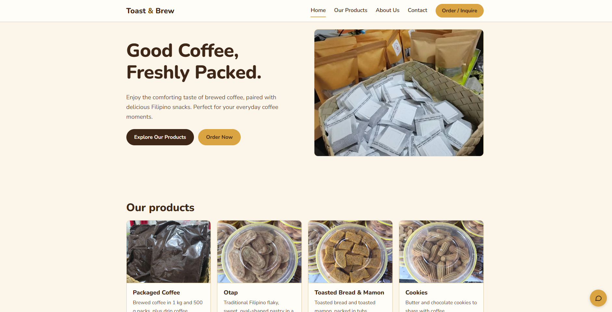
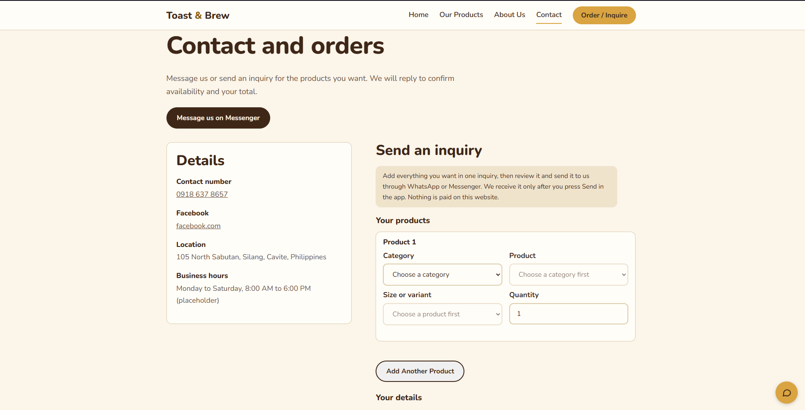

Coffee Shop & Bakery Website
A coffee shop and bakery website designed to showcase a variety
of coffee products and baked goods. The website features coffee
selections, otap, toasted mamon, and other breads, presented
through a clean layout and a coffee-inspired design.
The project focuses on presenting the products in an appealing
way and creating an enjoyable browsing experience for visitors.
Tech Stack
HTML
CSS
JavaScript
My Role
- Designed and developed the coffee website.
- Created the website structure using HTML.
- Styled the layout and visual elements using CSS.
- Organized coffee products and baked goods for presentation.
- Showcased products such as otap, toasted mamon, and other breads.
- Focused on creating a clean and visually appealing user interface.
Project Screenshot


← Back to Portfolio